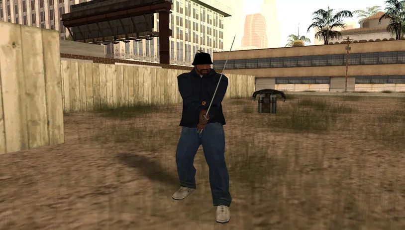
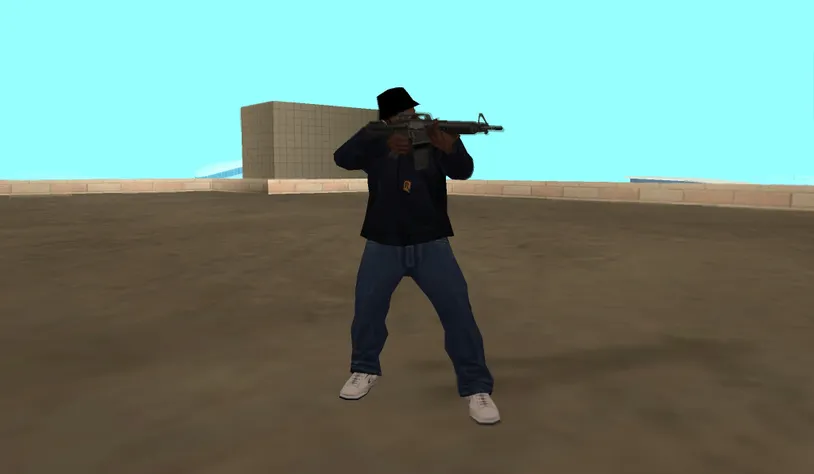
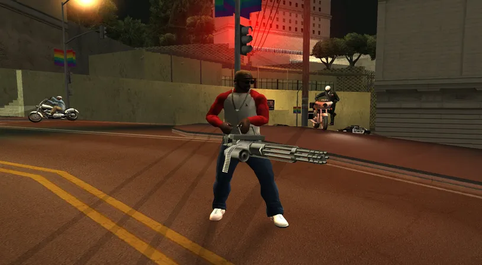
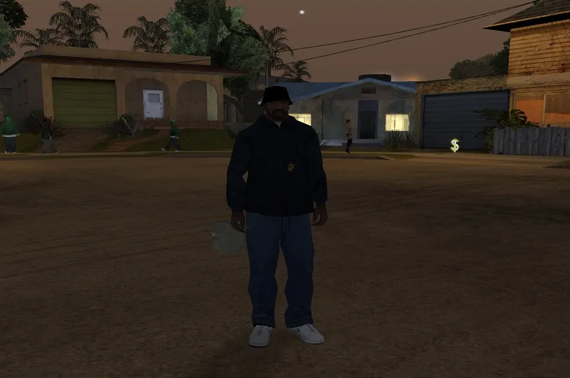
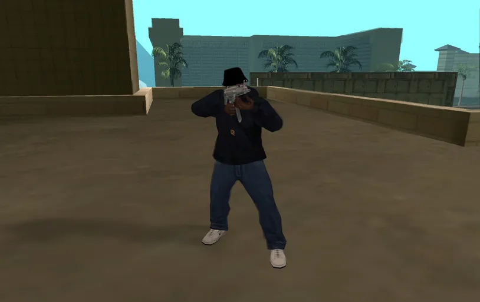
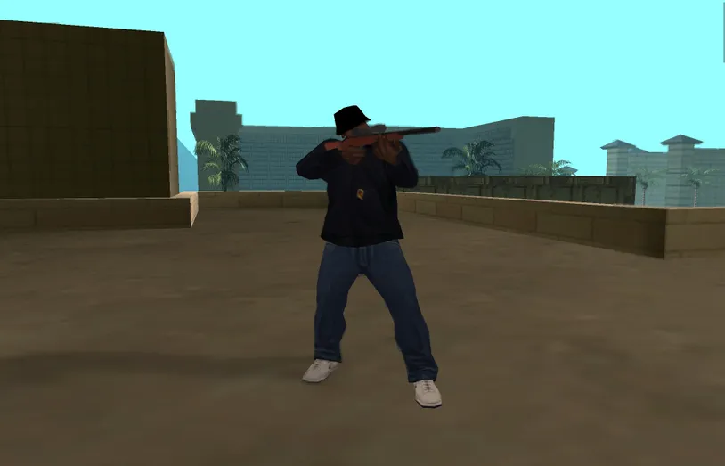

Katana
A Katana é a escolha perfeita para quem prefere um toque de classe e silêncio.
LOCALIZAÇÃO
Los Santos Beco em frente à esquina do desafio de lowriders.

M4
Quando a situação esquenta e você precisa de precisão, a M4 é sua melhor amiga.
LOCALIZAÇÃO
Los Santos Final da pista da direita do Aeroporto de LS.

Minigun
O ápice da destruição. Transforma veículos em sucatas em segundos.
LOCALIZAÇÃO
San Fierro Topo do primeiro arco da ponte ferroviária.

Bomba C4
Para o estrategista explosivo. Detone-as à distância.
LOCALIZAÇÃO
San Fierro Atrás do prédio do Avispa Country Club.
Red County Beco ao lado da Inside Track em Montgomery.

SMG (MP5)
Equilíbrio perfeito entre portabilidade e poder de fogo. Essencial para o drive-by.
LOCALIZAÇÃO
Los Santos Telhado do motel laranja em Jefferson.
San Fierro Beco perto do Avispa Country Club.

Sniper Rifle
Um tiro, uma vida. Elimine ameaças à distância com extrema precisão.
LOCALIZAÇÃO
Los Santos Topo das passarelas do "Stage 25" em Vinewood.
San Fierro Telhado em frente à Otto's Autos.